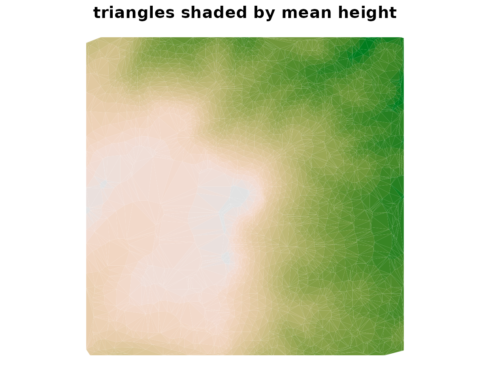
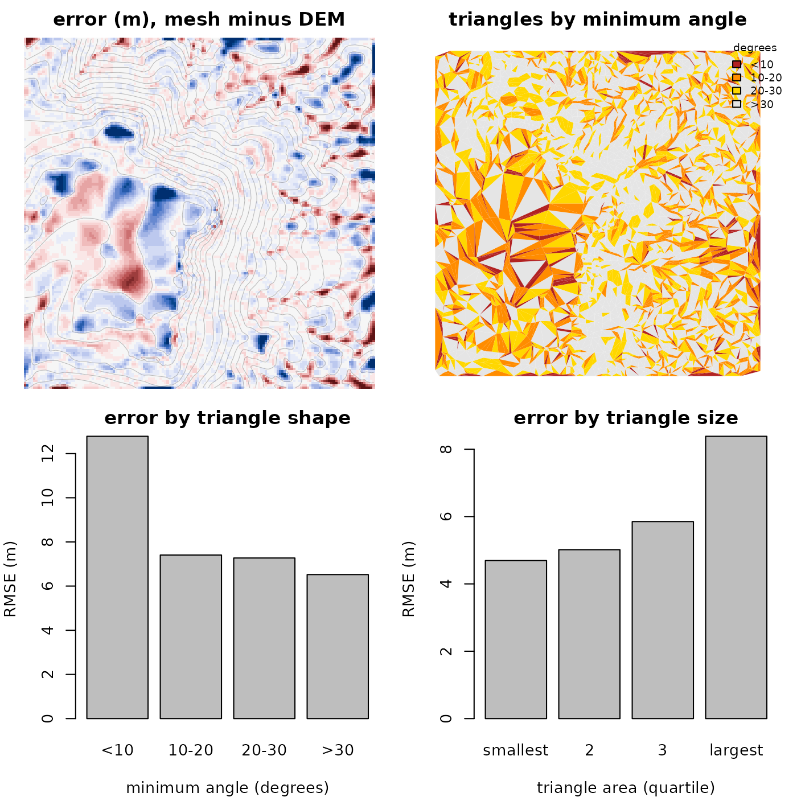
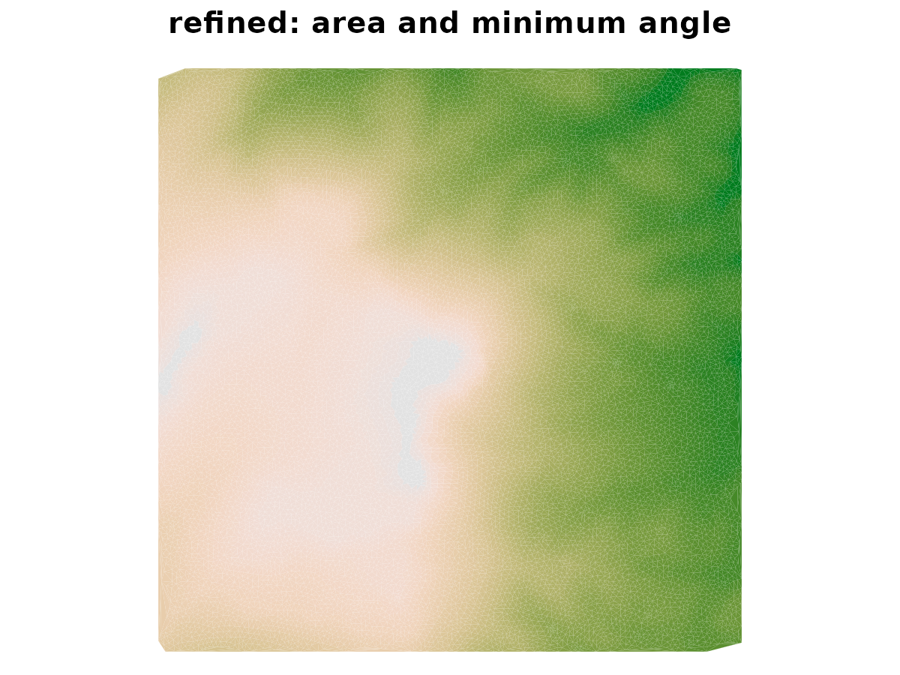

A classic use of constrained triangulation is to rebuild a surface from contour lines. The contours are constraints, each vertex carries its height, and the triangulation fills in between. This vignette does that for a 6 km square around kunanyi (Mount Wellington) in Tasmania, then checks the surface against the elevation model that the contours came from.
The data
The contours (every 50 m, simplified to 5 m) and a 40 m grid of the
source elevations are in a small file shipped with the package. The
source is the Tasmania 2 m digital elevation model, The LIST, (c) State
of Tasmania, under a Creative Commons Attribution 3.0 Australia licence.
The script that made the file is in the package source as
data-raw/tas_wellington.R.
d <- readRDS(system.file("extdata", "tas_wellington.rds", package = "cdtr"))
contours <- d$contours
head(contours)
#> line x y z
#> 1 1 521947.0 5253687 200
#> 2 1 521890.0 5253671 200
#> 3 1 521844.7 5253647 200
#> 4 1 521808.0 5253607 200
#> 5 1 521713.0 5253447 200
#> 6 1 521610.0 5253360 200
length(unique(contours$line))
#> [1] 53Each row is a vertex of a contour line (line identifies
the line) with its height z. Coordinates are metres in
GDA94 / MGA zone 55.
Contours as a PSLG
The segments join each vertex to the next one on the same line.
n <- nrow(contours)
same_line <- contours$line[-n] == contours$line[-1]
s0 <- which(same_line)
s1 <- s0 + 1L
c(vertices = n, segments = length(s0))
#> vertices segments
#> 2718 2665The contours are only constraints; there is no boundary ring, so the
mesh covers the convex hull of the contour vertices
(erase = "hull"). Where an input has no boundary there is
nothing for "outer" to erase against.
cdt_triangulate_attr() carries z along and
gives any new vertex a height interpolated from the constrained
triangulation of the input.
m <- cdt_triangulate_attr(contours$x, contours$y, s0, s1,
PA = cbind(z = contours$z), erase = "hull")
c(vertices = nrow(m$P), triangles = nrow(m$T), crossings = m$n_crossing)
#> vertices triangles crossings
#> 2708 5328 0
plot_surface <- function(m, main = "") {
zt <- rowMeans(matrix(m$PA[t(m$T), "z"], ncol = 3, byrow = TRUE))
pal <- hcl.colors(100, "Terrain 2")
col <- pal[cut(zt, 100, labels = FALSE)]
plot(m$P, type = "n", asp = 1, axes = FALSE, xlab = "", ylab = "", main = main)
polygon(m$P[t(cbind(m$T, NA)), 1], m$P[t(cbind(m$T, NA)), 2],
col = col, border = NA)
}
op <- par(mar = c(0, 0, 1.5, 0))
plot_surface(m, "triangles shaded by mean height")
par(op)How good is the surface?
The source elevations are at 40 m cell centres. Interpolating the
mesh to those points with cdt_interpolate() gives a check
that does not depend on how the contours were drawn.
cdt_locate() says which points fall outside the hull of the
contours, where there is no surface to compare.
g <- d$grid
nr <- nrow(g$z); nc <- ncol(g$z)
cell <- 40
xq <- rep(g$xmin + (seq_len(nc) - 0.5) * cell, each = nr)
yq <- rep(g$ymax - (seq_len(nr) - 0.5) * cell, times = nc)
zq <- as.vector(g$z)
inside <- !is.na(cdt_locate(m$P, m$T, xq, yq))
mean(inside)
#> [1] 0.9983111
surface_error <- function(m) {
zz <- cdt_interpolate(m$P, m$T, m$PA, xq[inside], yq[inside])[, "z"]
err <- zz - zq[inside]
c(rmse = sqrt(mean(err^2)), mean_error = mean(err), max_abs = max(abs(err)))
}
round(surface_error(m), 2)
#> rmse mean_error max_abs
#> 7.29 -0.43 47.50The root mean square error is about 7 m, with contours 50 m apart, and the average error is close to zero. The largest errors, tens of metres, are where the ground changes height between widely spaced lines: a linear mesh cannot put a peak above its highest contour or a hollow below its lowest, since it has no vertices there.
Quality
Triangles built only from contour vertices can be long and thin,
since all the vertices lie on the lines. cdt_quality()
reports it.
summary(cdt_quality(m)[c("min_angle", "radius_edge")])
#> min_angle radius_edge
#> Min. : 0.3408 Min. : 0.5813
#> 1st Qu.:17.4920 1st Qu.: 0.7913
#> Median :26.6345 Median : 1.1153
#> Mean :28.4450 Mean : 1.4617
#> 3rd Qu.:39.1878 3rd Qu.: 1.6635
#> Max. :59.3392 Max. :84.0609Does quality show in the surface?
cdt_quality() describes the shape of each triangle.
Whether it matters for the surface is a separate question, and the error
at the held-out points can be related to the triangle each point falls
in.
tri <- cdt_locate(m$P, m$T, xq, yq)
zz <- cdt_interpolate(m$P, m$T, m$PA, xq, yq)[, "z"]
err <- zz - zq
q <- cdt_quality(m)
angle_class <- cut(q$min_angle, c(0, 10, 20, 30, 60),
labels = c("<10", "10-20", "20-30", ">30"))
size_class <- cut(q$area, quantile(q$area, 0:4 / 4), include.lowest = TRUE,
labels = c("smallest", "2", "3", "largest"))
at_points <- data.frame(err = err, angle = angle_class[tri], size = size_class[tri])
at_points <- at_points[!is.na(tri), ]
rmse <- function(e) sqrt(mean(e^2))
by_angle <- tapply(at_points$err, at_points$angle, rmse)
by_size <- tapply(at_points$err, at_points$size, rmse)
round(rbind(share_of_points = table(at_points$angle) / nrow(at_points),
rmse = by_angle), 3)
#> <10 10-20 20-30 >30
#> share_of_points 0.048 0.188 0.233 0.530
#> rmse 12.784 7.408 7.272 6.522The top left map shows the error, and the top right shows the same mesh with its triangles shaded by minimum angle. The bars summarise the error by shape and by size.
emat <- matrix(err, nr, nc)
xs <- g$xmin + (seq_len(nc) - 0.5) * cell
ys <- g$ymax - (seq_len(nr) - 0.5) * cell
lim <- 30
op <- par(mfrow = c(2, 2), mar = c(0.5, 0.5, 2, 0.5))
image(xs, rev(ys), pmax(pmin(t(emat)[, nr:1], lim), -lim), asp = 1, axes = FALSE,
xlab = "", ylab = "", zlim = c(-lim, lim), col = hcl.colors(21, "Blue-Red 3"),
main = "error (m), mesh minus DEM")
for (l in unique(contours$line)) {
i <- contours$line == l
lines(contours$x[i], contours$y[i], col = "#00000040", lwd = 0.5)
}
shade <- c("firebrick", "darkorange", "gold", "grey90")
plot(m$P, type = "n", asp = 1, axes = FALSE, xlab = "", ylab = "",
main = "triangles by minimum angle")
polygon(m$P[t(cbind(m$T, NA)), 1], m$P[t(cbind(m$T, NA)), 2],
col = shade[angle_class], border = NA)
legend("topright", legend = levels(angle_class), fill = shade, title = "degrees",
cex = 0.7, bty = "n")
par(mar = c(4, 4, 2, 1))
barplot(by_angle, xlab = "minimum angle (degrees)", ylab = "RMSE (m)",
main = "error by triangle shape")
barplot(by_size, xlab = "triangle area (quartile)", ylab = "RMSE (m)",
main = "error by triangle size")
par(op)The worst-shaped triangles (under 10 degrees) have about twice the error of the well-shaped ones, but they are a small share of the points, and most of the error map is somewhere else. The largest errors are on the summit plateau, in the largest triangles, where one triangle spans ground that rises and falls between contours. The error rises steadily through the size quartiles, from about 5 m to 8 m, where the effect of shape is mostly in the worst class. Thin triangles are where contours run close together, such as steep ravines, where the true surface is also changing quickly, so shape and error are related but one does not explain the other. Minimum angle is a good guide to whether a mesh will behave well, but a poor guide to how accurate the surface is.
Adding Steiner vertices by refinement improves the shape of the triangles. Does it improve the surface? Refine to a maximum area and a minimum angle, and compare the same measures.
mr <- cdt_triangulate_attr(contours$x, contours$y, s0, s1,
PA = cbind(z = contours$z), erase = "hull",
max_area = 2000, min_angle = 25)
qa <- cdt_quality(m)
qb <- cdt_quality(mr)
rbind(
contours_only = c(triangles = nrow(m$T), median_min_angle = median(qa$min_angle),
share_below_20 = mean(qa$min_angle < 20), surface_error(m)["rmse"]),
refined = c(triangles = nrow(mr$T), median_min_angle = median(qb$min_angle),
share_below_20 = mean(qb$min_angle < 20), surface_error(mr)["rmse"])
) |> round(3)
#> triangles median_min_angle share_below_20 rmse
#> contours_only 5328 26.634 0.322 7.289
#> refined 28692 44.678 0.010 7.238Refinement makes the triangles much better shaped (far fewer with a
minimum angle below 20 degrees), at the cost of five times as many
triangles, but the surface error is essentially unchanged. The new
vertices only carry heights that the contours already imply. The extra
triangles are for anything that needs well-shaped elements, such as
rendering or a finite element model, and not for accuracy. For a better
surface there must be more information, such as spot heights along
ridges and streams, which can be added as vertices with their own
z.

par(op)The unrefined component of the result says where
refinement could not meet its targets, and a few triangles remain well
below the 25 degree target.
mr$unrefined[, c("criterion", "circumcenterOutside", "shortEdgeTriangles",
"sharpFixedCorner")]
#> criterion circumcenterOutside shortEdgeTriangles sharpFixedCorner
#> 1 area 379 0 0
#> 2 angle 434 17 1
qr <- cdt_quality(mr)
sum(qr$min_angle < 5)
#> [1] 94Those few triangles are mostly right at the edge of the mesh. The convex hull is not itself a constraint here, so its edge is not something the refiner can split to improve the triangles beside it. If a clean outer edge matters, add a bounding polygon to the constraints.